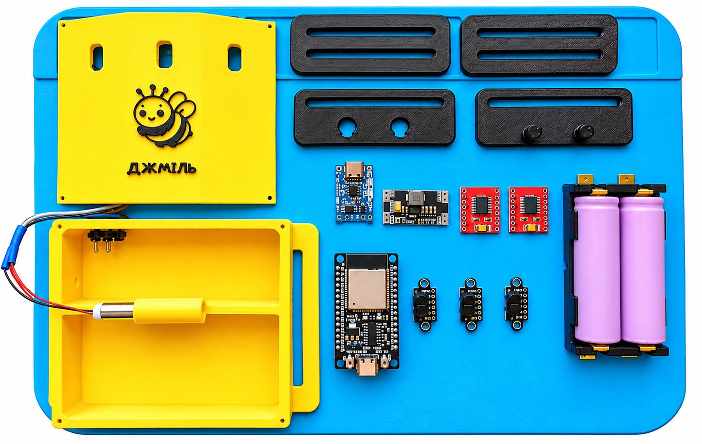
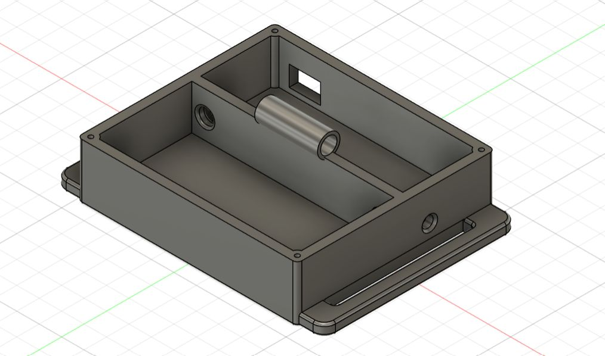
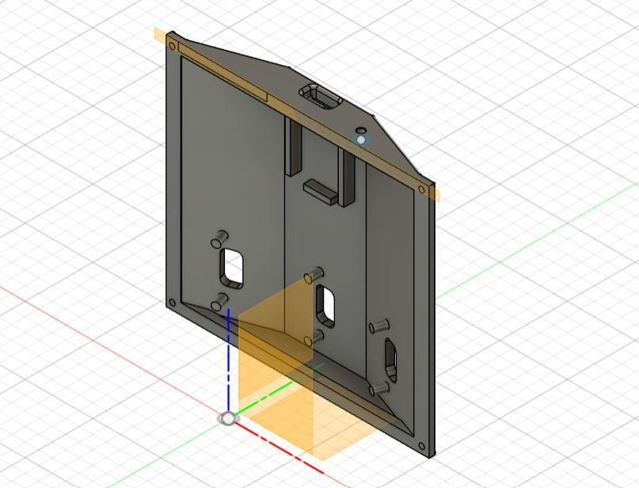

пристрій планується як відкрита конструкція з доступних компонентів, яку можна повторити та вдосконалити

основні вузли і деталі: мікроконтролер (ESP32), три ToF-датчики відстані (VL53L1X) з захисними кожухами, три вібродвигуни на 3 В (7 x 25 mm), два акумулятори (18650), тримач акумуляторів для паралельного з'єднання, модуль заряджання (TP4056), перетворювач напруги (TPS63070), два драйвери двигунів (TB6612FNG), вимикач розміром 10 х 15 мм, резистори на 47 кОм і 100 кОм, з'єднувальні проводи, корпус (3D-друк, дві частини), защіпка (3D-друк, дві частини), регулювальні скоби (3D-друк, дві штуки), чотири саморізи для скріплення частин корпусу, еластична стрічка шириною 60 мм (1,5 метри), еластична стрічка шириною 50 мм (25 см).
корпус, кріплення та проводи мають витримувати щоденне використання, випадкові удари, натяг ременя та ремонтне розбирання
плати пристрою розміщуються в корпусі в термоусадках, датчики до корпусу кріпляться за допомогою термоклею або інакше
отвір в нижній частині корпусу зроблено для контролю заряду помічниками користувача, червоний колір світлодіоду - пристрій заряджається, синій - акумулятори пристрою заряджено
після складання потрібно окремо перевірити кожен датчик, кожен вібродвигун, індикацію низького заряду та поведінку пристрою на різних відстанях
перед передачею пристрою користувачеві варто рекомендувати йому відвідати відповідний розділ сайту
якщо ви хочете і вмієте змінити скетч, то
в цій папці описані основні налаштування
майстре, після збирання пристрою, вікалібруйте. Порівняйте покази мультиметра на реальних акумуляторах з тим, що бачите у Serial (Battery 1S2P: … V). Поділіть значення мультиметра на показ в Serial і впишіть результат у BATTERY_CALIBRATION_FACTOR. Зараз там стоїть одиниця, тобто припускається, що якщо мультиметр вважає, що на акумуляторах 4 Вольти, то і контролер вважає так само.


корпус «Джміля», защіпку під 60 мм стрічку та регулювальні скоби можна надрукувати на 3D принтері.